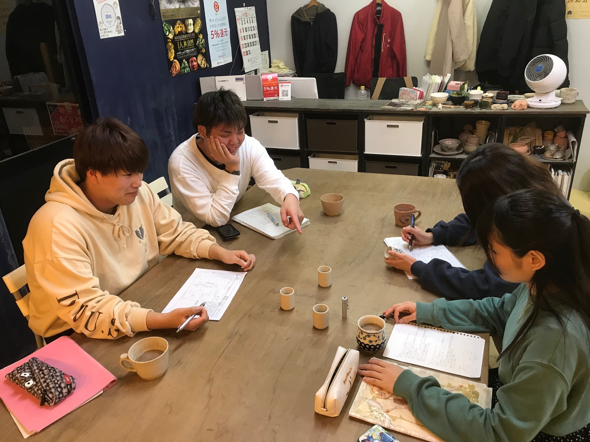

私が神奈川大学の経営学部で満足していることは経営学の分野だけではなく様々な分野が学べるというところだろう。
かくいう私は初めの頃経営学に対して毛ほども関心が無かった（今はやる気に満ちあふれている）そんな私を支えていたのは経営学の分野以外の教科の心理学や美術史、生物学などの存在でした。
もう一つあげるならば地域プロジェクトや長期インターンなどの学校の”外”の学びの授業が多いことだ。学校では学べないような現場の空気や机に向かっているだけではわからない目上の人との関わり方など社会に出た時に必要不可欠な体験ができるとても満足できる授業だった。

地域プロジェクト先の 陶磁器工房 器楽での写真
おじいちゃん先生や緩い先生の授業では特に！！
どうにかしてくれ。。。
今は自分の強みを見つけられていない状態なので今後、自分の強みを見つけ、価値を高めるように様々なことに挑戦し、成功や失敗をしながら身につけていきたい。
グループワークを通して集団の中でのコミュニケーション能力や自分を活かしながら意見をまとめる力を養うのもいいが自分は一人で考え実行することがあまり得意ではないので”個”の力を鍛えられるような取り組み方をしていきたい。